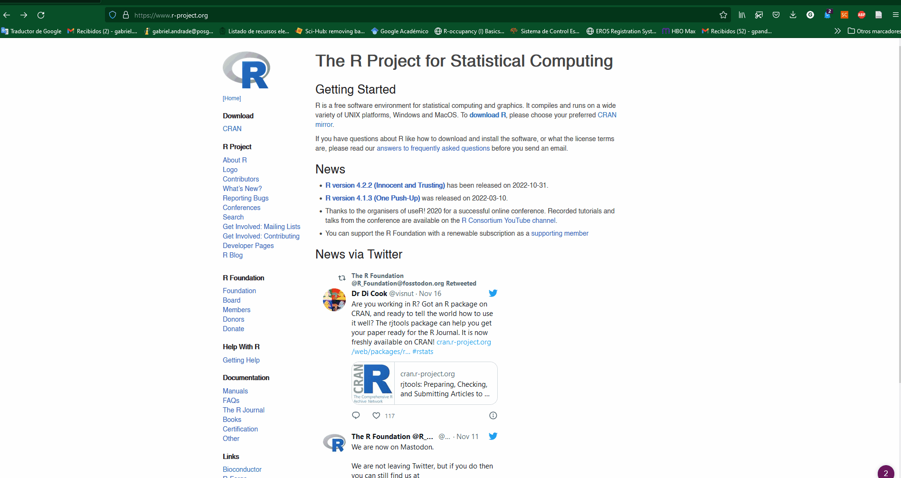
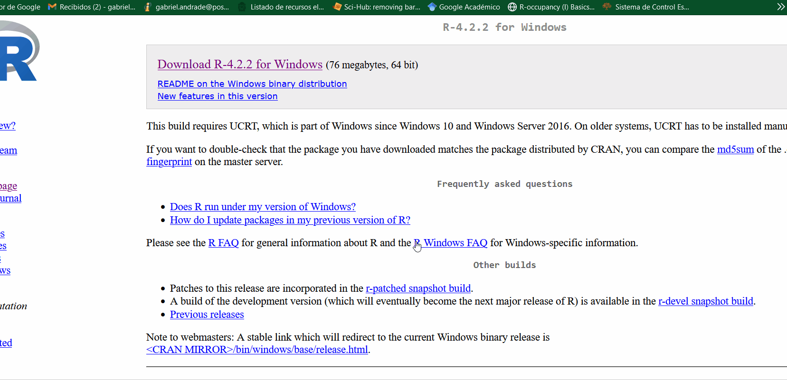
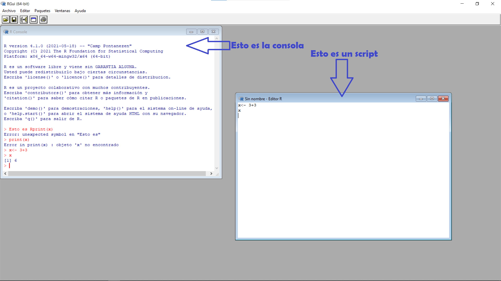
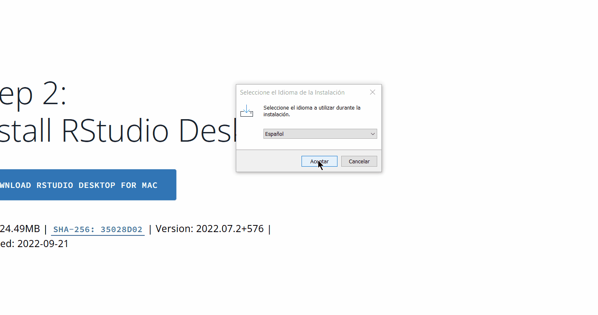
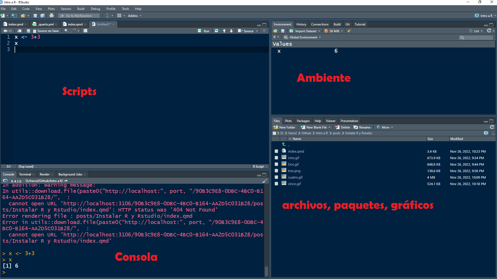

Instalar R
Descarga de R
Para instalar R lo primero que tienes que hacer es dirigerte a la página https://www.r-project.org/. Una vez allí solo tienes que dar click en download R. Una vez den click en downlad, llegarán a una página con todos los mirrors para descargar R. Pueden cualquiera esté mas cerca de su lozalización.
Llegarán a otra página en donde les darán a escoger el instalador dependiendo de su sistema operativo: Linuz, Mac o Windows. En mi caso, yo trabajo con Windows (creo que la mayoría también), entonces seguimos a otra página con las posibles instalaciones de R. Nosotros instalaremos el base. Finalmente, estaremos en la página donde podremos dar click en Download R-4.2.2. La versión puede cambiar dependiendo de la fecha, entonces los números puede variar dependiendo de cuando sigan este tutorial.
Guarden el instalador en donde ustedes consideren.

Si ya tienes R instalado, volverlo a descargar implica actualizarlo. Ten en cuenta que al actualizar R, tendrás que re-instalar toda la paquetería (ya veremos que son los paquetes de R)
Instalar R
Vamos a abrir el instalador que descargaron. Simplemente abrimos el archivo y seguimos todas las instrucciones tal cual. Si todo sale bien, R empezará a instalarse y solo debemos esperar y darle finalizar.

Una vez R este instalado, tendrán en el escritorio o el inicio un icono como este:

con un título como R x 64 4.x.x (los x cambián depeniendo de la versión instalada).
Al abrirlo, tendremos una ventana que tiene una subventana con el nombre de Console. Pueden también poner archivo, nuevo script y tendrán otra ventana de script. En la consola podemos escribir y ejecutar código, pero sin guardarlo. En la ventana de script podemos escribir código y guardarlo, pero todo lo que ejecutemos se verá solo en la consola.

La verdad es que R como tal no es muy amigable de buenas a primeras. De hecho, yo nunca uso el R base. Por este motivo, vamos a instalar una interfaz de usuario más amigable llamada RStudio.
Instalar RStudio
Descargar RStudio
Para descargar RStudio tenemos que ir a la página de https://posit.co/ (posit es la empresa). Le damos a Download RStudio y luego en RStudio Desktop (el free). Llegaremos a una página donde nos dice que el primer paso es instalar R, ya que RStudio es solo una interfaz, este no funciona sin tener instalado R. Como ya instalamos R, vamos ir al paso dos que es instalar RStudio desktop. Nota: aunque dice “for mac” descarga el .exe de windows. Guardamos el instalador y listo.

Instalar RStudio
Al abrir el instalador simplemente seguimos las instrucciones. El único paso importante es donde le decimos donde esta instalado R, pero si seguimos por default la instalación de R no tenemos que cambiar ningúna dirección.

Finalmente, se instalará y te generará un icono como este

Al abrir RStudio tendremos algo así:

Tenemos nuestra consola, donde se ejecutan los procesos, los scripts donde vamos desarrollando el código, pero además tenemos un ambiente: donde se guardan todos los objetos que vamos creando. También tenemos otra pestaña con los archivos, los gráficos que se generan, los paquetes entre otas cosas.
Créanme RStudio facilita mucho la vida a quienes no somos programadores, ayuda a completar funciones, objetos, pero además tienen muchas extensiones qué expanden las capacidades de R. Es por eso que les recomiendo trabajen siempre desde RStudio, no se van a arrepentir 😉.